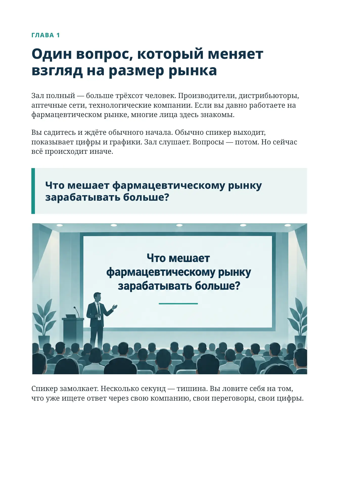
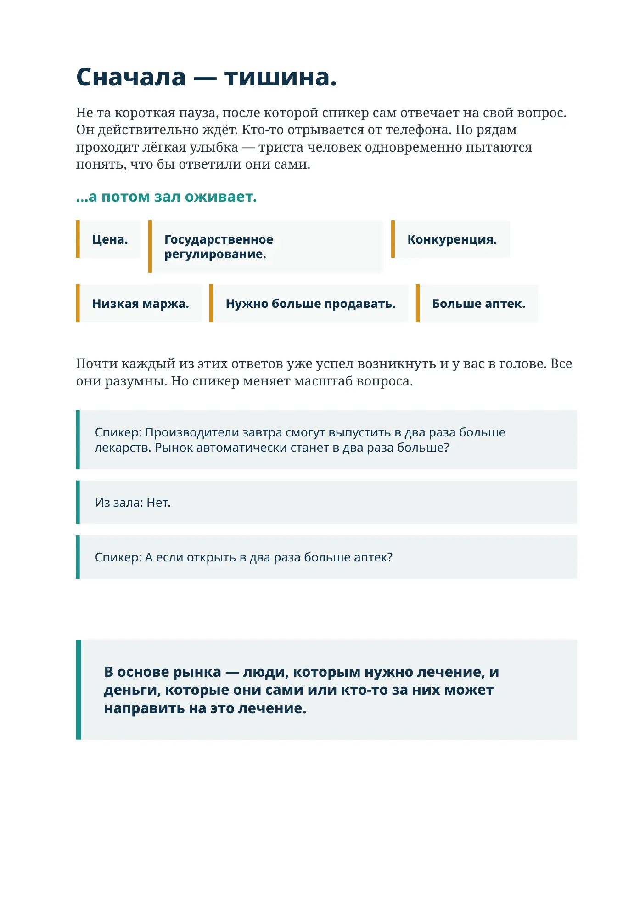

Где заканчивается рынок?
ГЛАВА 1
Один вопрос, который меняет взгляд на размер рынка
Зал полный — больше трёхсот человек. Производители, дистрибьюторы, аптечные сети, технологические компании. Если вы давно работаете на фармацевтическом рынке, многие лица здесь знакомы.
Вы садитесь и ждёте обычного начала. Обычно спикер выходит, показывает цифры и графики. Зал слушает. Вопросы — потом. Но сейчас всё происходит иначе.
Что мешает фармацевтическому рынку зарабатывать больше?
Спикер замолкает. Несколько секунд — тишина. Вы ловите себя на том, что уже ищете ответ через свою компанию, свои переговоры, свои цифры.
Сначала — тишина.
Не та короткая пауза, после которой спикер сам отвечает на свой вопрос. Он действительно ждёт. Кто-то отрывается от телефона. По рядам проходит лёгкая улыбка — триста человек одновременно пытаются понять, что бы ответили они сами.
…а потом зал оживает.
Цена.
Государственное регулирование.
Конкуренция.
Низкая маржа.
Нужно больше продавать.
Больше аптек.
Почти каждый из этих ответов уже успел возникнуть и у вас в голове. Все они разумны. Но спикер меняет масштаб вопроса.
Спикер: Производители завтра смогут выпустить в два раза больше лекарств. Рынок автоматически станет в два раза больше?
Из зала: Нет.
Спикер: А если открыть в два раза больше аптек?
В основе рынка — люди, которым нужно лечение, и деньги, которые они сами или кто-то за них может направить на это лечение.